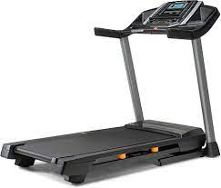
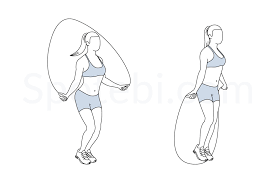
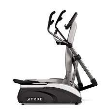

Welcome to Our Cardio Webpage
This webpage will show you a couple of exercises that you will be able to have a better cardio.
Some of the exercises that are available in this gym are:
- Treadmill
- Jump Rope
- Elliptical Machine
Treadmill: (This machine will help you either improve your mile time or provide you with a nice warm-up to prepare yourself with other exercises that you may do).
Jump Rope: (This piece of equipment will allow you to have a good sweat as you rotate the rope for a period of time. You can also mix jumping rope with other exercises to have a good workout).
Elliptical: (This exercise will allow you to have a different method of burning calories. This helps you build your practice for bicycling and improve your time and speed).



Link to my second page